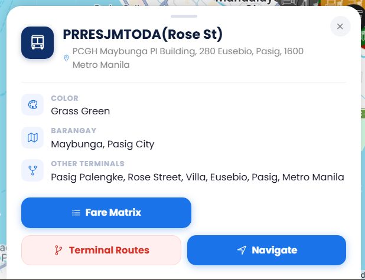
App Development
Tricy-Track
A tricycle terminal and route navigating application concept for Pasig City, created to help users find terminals and understand routes.
Projects, coursework, certificates, and experiences—organized by school year and term. This archive is designed to grow with me through fourth year.
Projects and milestones that started my interest in technology.

A tricycle terminal and route navigating application concept for Pasig City, created to help users find terminals and understand routes.
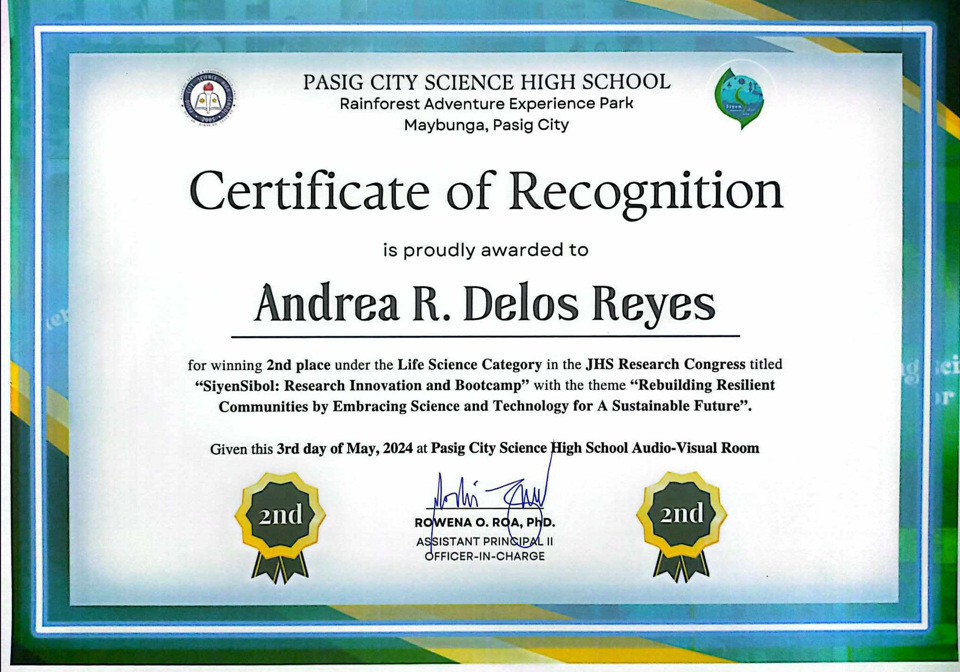
Received second place at the PCSHS Research Congress.
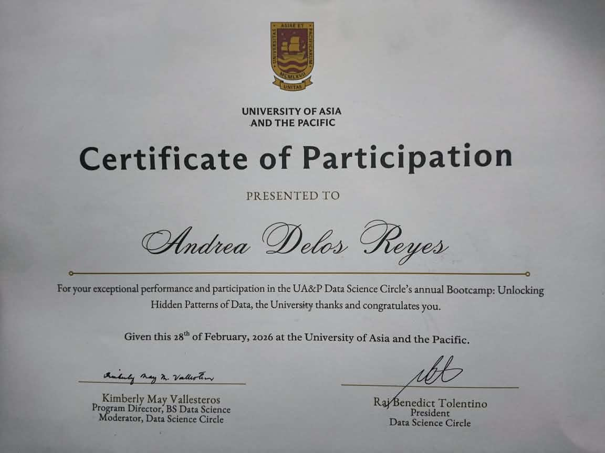
Participated at the Division of Science and Technological Fair (DSTF) and received a People's Choice Award.
Participated in the University of Asia and the Pacific Data Science Bootcamp and explored data-focused thinking.
Select a term to view the work recorded for that period. Future terms are clickable and ready for new content.
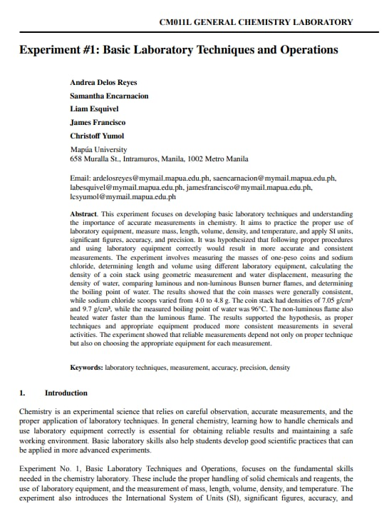
A record of the first laboratory activity, including objectives, method, results, and key takeaways.
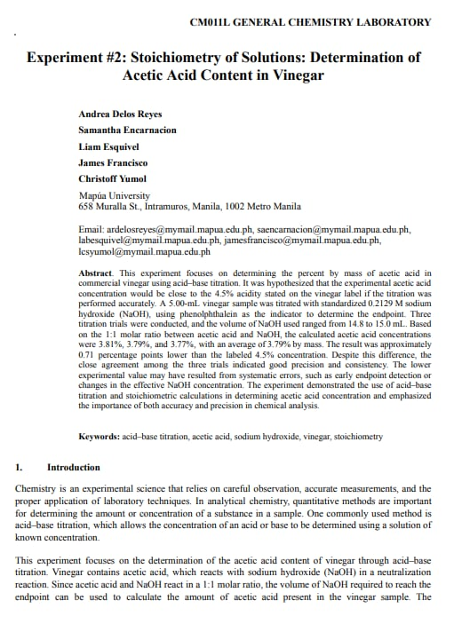
A record of the second laboratory activity, including objectives, method, results, and key takeaways.
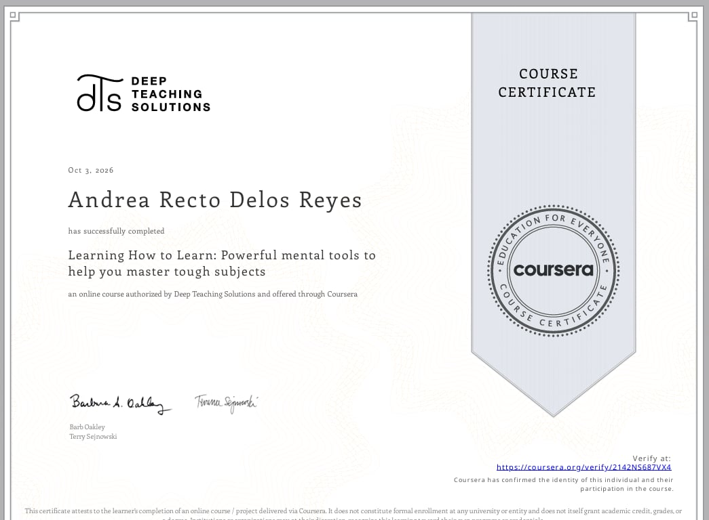
Certificate and learning summary for the CM011 course.
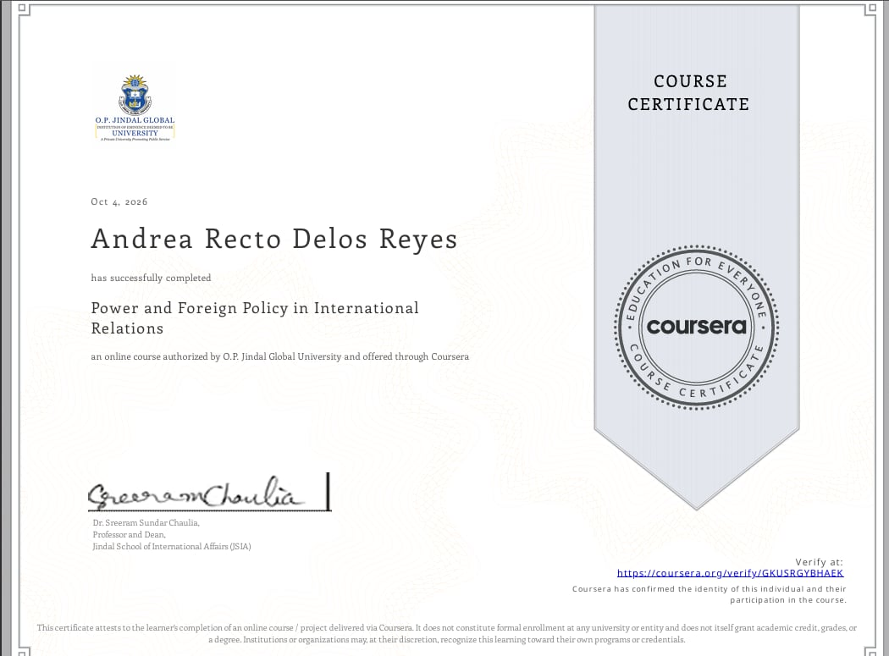
Certificate and learning summary for GED105.
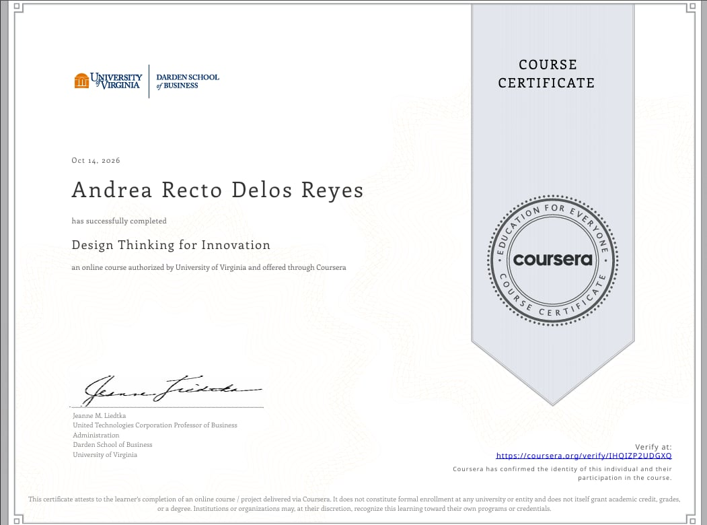
Certificate and learning summary for AIE.
Certificate and learning summary for CM011L.
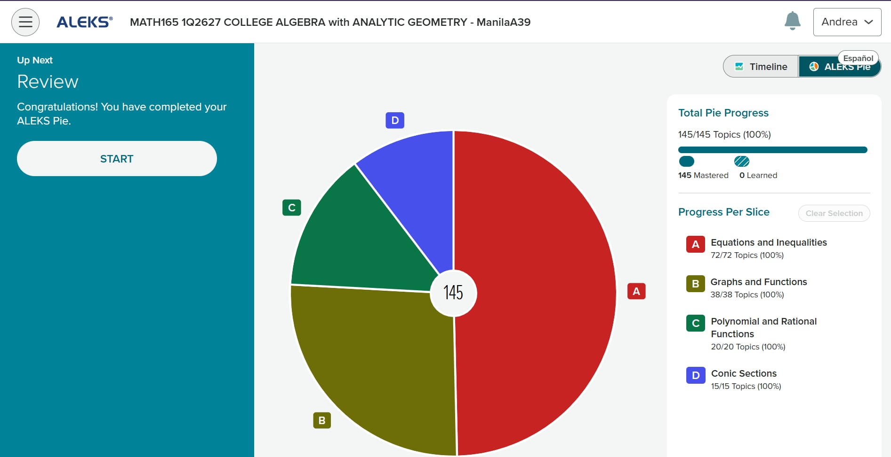
Evidence of ALEKS PIE completion and the mathematical topics practiced.
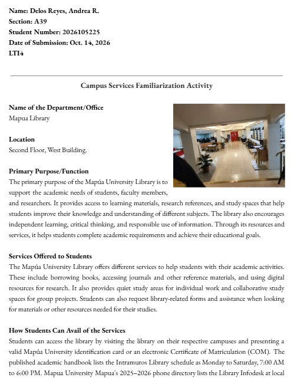
Learning task or assessment for AIE.
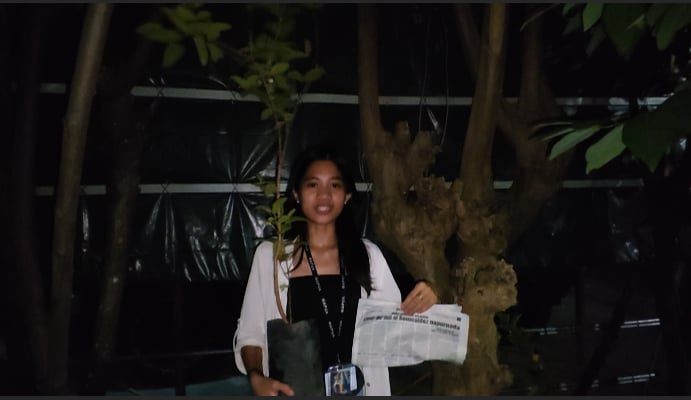
Documentation of participation in the NSTP tree planting activity.
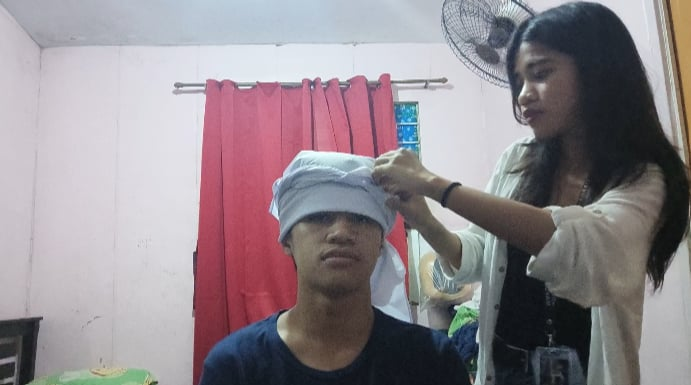
Video output demonstrating bandaging techniques for NSTP.
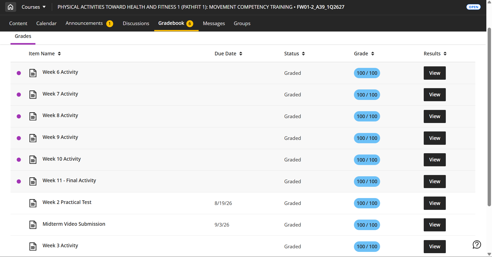
First PATHFIT exercise video submission.
Second PATHFIT exercise video submission.
A personal record of PATHFIT grades and progress.
Image tip: replace each placeholder block with an <img src="assets/your-image.jpg" alt="Description"> element and put your image in the assets folder.